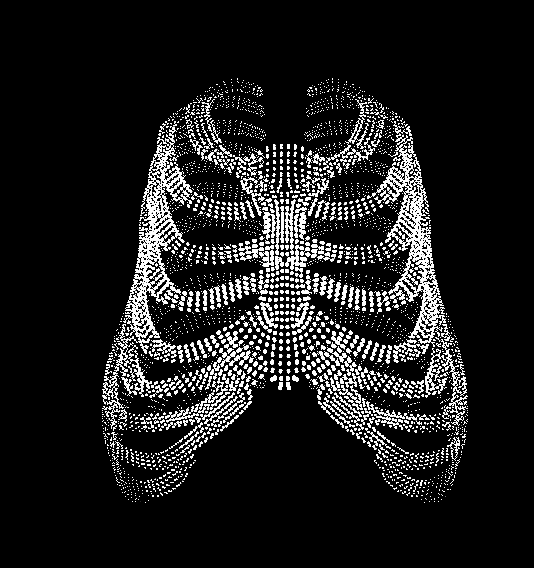

Démo
Découvrez ASTRA en action :
Présentation
Explorez vos données biomécaniques avec une interface ultra moderne et intuitive.
Téléchargements
Télécharger la dernière version (v0.0.4 Windows)Contact
Pour toute question, remplissez le formulaire ci-dessous :